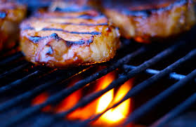

Easy Pork Chop Brine
Home

Description
This recipe brings your pork chops from everyday to out of this world!!!
A quickly prepared brine followed by a few hours in the fridge leads to the
juiciest pork chops EVER!!
Ingredients
- 4 cups of cold water
- 1/3 cup of salt
- 2tbsp of black pepper
- 2tbsp of dark brown sugar
- 2 bay leaves
- 4 - 6 Pork chops, preferably thick cut
- Zip top bag
Directions
- Combine water, salt, pepper, sugar, and bay leaves, mix well
- Add pork chops to zip top bag
- Pour brine solution into bag
- Remove as much air as possible
- Set in fridge for 4 - 5 hours.
- Cook however you prefer. Bar B Q works great!!